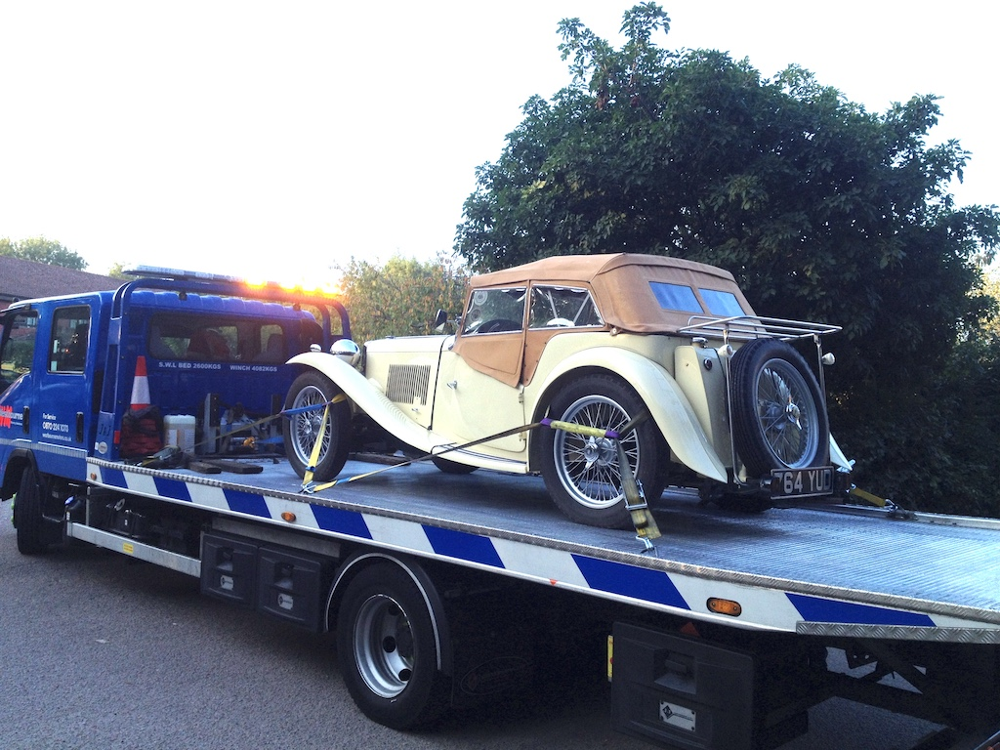
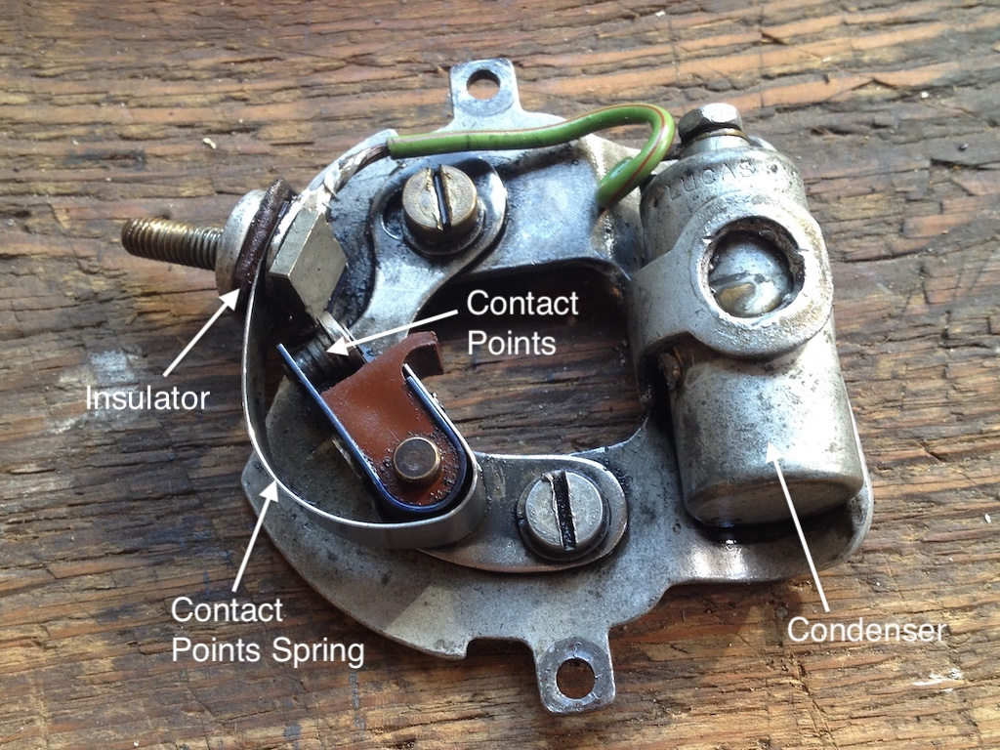

It was a misty morning, but Angela and I arrived at Whiteways Lodge in TC4985 at eight o'clock, having driven the 14 miles from Steyning, only to find that most of the setting-up had already been done by the other volunteers. So we donned our hi-vis vests and started directing the incoming MGs that were starting to trickle in. As the morning progressed, the sun burnt its way through the mist and the forecast fine day was with us. Luckily the number of cars leaving Whiteways to start the run balanced those still arriving by about ten and so by 10:30, and after finding a suitable bush, we set off on the SDR route, heading for Eastbourne. There was no South Downs Run in 2020, of course, and we had missed the 2019 run due to visiting our daughter and her family, who were then living in California. So our last run had been in 2018.
A little over 20 miles from the start, on the B2133 heading for Ashington, I detected a slight 'stammering' of the engine, a series of short 'hiccups' and then all would be fine. On the short stretch of the A24 and then again on the A283, heading for Bramber, we had similar problems. WE could have gone home to investigate the problem, but I decided to stop at the Castle Inn Hotel in Bramber for coffee and to examine the engine. After refreshments the under bonnet area had cooled down a bit and I turned on the ignition. The usual 'tick' of the fuel pump remained fast, suggesting a sticking diaphragm, so I hit the fuel pump a couple of times with a large spanner (apparently a standard remedy) and all seemed well. The engine started easily and ticked over well. So full of confidence we set of again in the direction of Eastbourne.
We managed to snake our way through Fulking and Poynings, but when we got to the A23 our problem returned. I 'nursed' the car through Ditchling and Barcombe and we reached the A22. Due to the road works at the Drusilas roundabout on the A27 causing long delays, we had been advised to continue down the A22 to Polegate and then turn back along the A27 before turning into Wilmington. So we continued down the A22, with the problem getting more severe by the mile. As we approached the Bowship roundabout there was a sign to 'services', so we pulled into an area that had a petrol station, shops and cafe, as well as a Travelodge. As we entered so we saw an RAC patrol man talking with some other travellers. We parked in a shaded spot and, being RAC members, I ask for assistance. He was very obliging and he checked the usual suspects; fuel pump, distributor cap, rotor arm and contact points. All seemed fine, but when he had re-assembled the distributor the engine would not start!
The RAC patrol man's only suggestion was that we phon the RAC to arrange a car transporter to pick us up, which we did. We got the impression that we would only need to wait up to 90 minutes. However, a call from the company to who the work had been subcontracted phoned to say that it could be four or five hours. Luckily the weather was fine, we had coffee and toilets to hand and we only had to wait four hours.
I have to say that the transporter driver was excellent. He was very careful loading the car on to his truck and then, when we got home, he reversed up the slope of our drive and deposited the car into our garage, in almost exactly the spot where it normally stands.
I guess it was inevitable that sooner or later the car would break down and we would need to be rescued. But it is a pity that we only managed 60 miles of the 80 mile South Downs Run.
So what was the problem? The fuel pump pumped petrol into a jam jar and the coil produced a spark at the inlet to the distributor. As you can see from the photo, the condenser looks as though it could be as old as the car and its size and fitting are different to present day versions. So I bought a new distributor baseplate, with condenser, and fitted it. However, when I removed the old plate I discovered that the contact points spring had been placed the wrong side of the insulator, thus earthing both sides of the points. No wonder the engine wouldn't start. I guess that a modern-day RAC patrol man doesn't come across many distributors with contact points! Of course, with the new plate and condenser and with the points adjusted, the engine started and ran well on a short test run.
So, again, what was the problem? It is often reported that, since the carburettors are directly above the exhaust manifold, petrol in the supply lines and various parts of the carburettors can vaporise. This, apparently is more common with modern fuels, which have a lower vaporisation temperature. Consequently, people fit insulating gaskets between the carburettors and the inlet manifold and heat shields between the carbs and the exhaust manifold. In just over six years of ownership I've never experienced this problem, but one of the symptoms is a 'hesitatation' whilst at speed. The day of the SDR was certainly warm and the TC's fuel tank is exposed to the sun on the rear of the car.
By letting the engine cool down it is just possible that we could have completed the final 20 miles and joined everone else on the Western Lawns. A slightly shorter ride home, when it was a little cooler, might also have worked. So perhaps I will replace a black rubber petrol supply pipe with a steel braid covered one (which might conduct heat away more easily) and see how it goes.
(Written 13th September 2021; published in WSMGOC Main Gear, xxx 2021.)
© David James 2021 Last updated: 13th September 2021